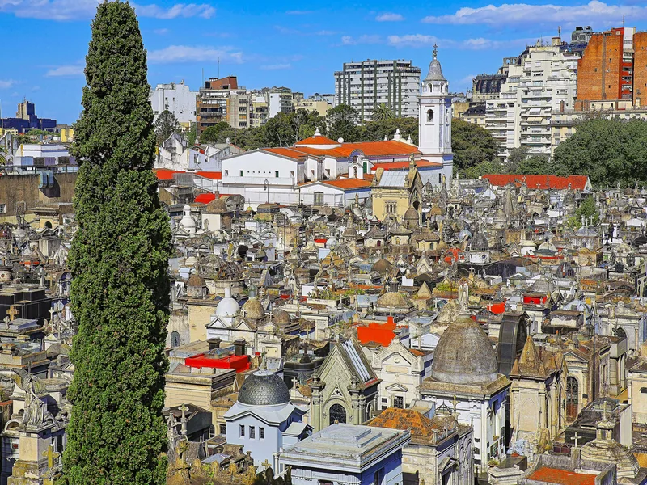

Das Erste, was in Recoleta auffällt: Es fühlt sich nicht wie ein Friedhof an. Eher wie ein Stadtviertel: Straßen, Eckgrundstücke, Hausnummern, Haustüren. Dann liest man die Namen an den Türen und begreift, dass es tatsächlich ein Viertel ist — das Viertel, in dem Argentinien seine Präsidenten, Generäle, Wissenschaftler und Schriftsteller aufbewahrt, einen Boxchampion und einen Friedhofswärter, der jahrzehntelang sparte, um hier einziehen zu dürfen.
Diese Seite hilft Ihnen zu entscheiden, welche Gräber sich lohnen: wer die Person war, warum sie zählt, wie das Grab aussieht und wo es ungefähr steht. Sind Sie erst einmal drinnen, verbindet der TouringBee-Audioguide 22 davon zu einer fertigen Route: Eine Offline-Karte führt von Gruft zu Gruft, und an jeder Tür beginnt eine eigene Geschichte. Hier ist die Besetzungsliste. Dort ist das Stück.
Sie planen noch die ganze Reise? Beginnen Sie mit unserem kompletten Guide zum Friedhof Recoleta und kommen Sie dann für das Who's who hierher zurück.
Recoletas Bewohner auf einen Blick
Zum Audioguide →
Wo die wichtigsten Gräber stehen: eine kostenlose Skizze
Für alle, die allein unterwegs sind. Zwei Orientierungspunkte ordnen alles: das Haupttor an der Junín und der große weiße Christus in der Mitte, wo sich die Hauptalleen kreuzen.
- Das Haupttor (Portikus)Hier geht es los. Fragen Sie das Sicherheitspersonal nach einem Papierplan — es gibt nicht immer einen.
- Pantheon der verdienten BürgerGleich hinter dem Eingang, an der Hauptallee: das bürgerliche Pantheon der jungen Republik.
- Der zentrale ChristusAm Ende der Hauptallee. Ihr Kompass; alles Weitere wird von hier aus gemessen.
- SarmientoVom Christus die breite Allee entlang; der Obelisk mit dem Kondor ist schon von weitem zu sehen.
- MitreNahe Sarmiento, auf derselben Achse der Hauptalleen.
- Eva PerónVom Christus nach links, ein paar kurze Blocks, dann in eine schmale Seitengasse; achten Sie auf „Familia Duarte“ und tagsüber auf eine kleine Menschentraube.
- Admiral BrownDie grüne Säule, von der Hauptallee aus im vorderen Teil des Friedhofs zu sehen, Richtung Basilika.
- LeloirEine hohe Jugendstilfassade mit Mosaikkuppel, im mittleren Abschnitt.
- FirpoDie Statue des Boxers im Mantel vor einem Granitmausoleum; in den Seitengassen hinter Evita.
- Rufina CambaceresDas Mädchen an der Tür, abseits der Hauptachsen; von hier gehen die meisten zurück zur Kapelle und zum Ausgang.
Die Skizze gibt Richtungen, keine Schritt-für-Schritt-Navigation: Recoletas Gassen wiederholen sich, und diese Liste dauert beim ersten Mal etwa neunzig Minuten. Fotografieren Sie nach jedem Halt die nächste Kreuzung, damit Sie den Weg zurückfinden.
Wie man diesen Friedhof liest
Eine Gruft in Recoleta ist das Plädoyer einer Familie dafür, wie sie erinnert werden wollte. Ein General bekommt Trophäen und Adler, ein Richter eine Waage, ein Kind Blumen und einen Engel. Die Eckgrundstücke sind die auffälligen — mehr Fassade, besseres Licht, ein feierlicher Zugang. Büsten machen Politiker zu Dauerrednern. Wer das einmal gesehen hat, liest jede Tür als Satz, und die Namen unten werden zu Nachbarn, Rivalen und Verschwägerten statt zu einer Liste.

Die Präsidenten
Mindestens achtzehn argentinische Präsidenten liegen hier, und wie jeder von ihnen in Szene gesetzt ist, sagt so viel wie die Biografie.
Domingo Faustino Sarmiento (1811–1888)
Präsident, Lehrer, Architekt des staatlichen Schulsystems. Victor de Pol gab ihm kein Haus, sondern einen Obelisken mit einem Kondor auf der Spitze und einem eingemeißelten französischen Satz: On ne tue point les idées — Ideen kann man nicht töten. Achten Sie auf die Reliefs mit Kindern und Büchern. Eine der beredtesten politischen Aussagen des Friedhofs, direkt neben einigen seiner stillsten Nachbarn.
Bartolomé Mitre (1821–1906)
Präsident, General, Historiker, Gründer der Zeitung La Nación. Die Gruft wurde 1938 im Art-déco-Stil neu gebaut, mit Allegorien der Pflicht, Argentiniens und der Gerechtigkeit. Vergleichen Sie ihn mit Sarmiento: hier ein Mensch, der zur Landschaft wurde, dort ein Staatsamt, umringt von Tugenden. Zwei Ideen einer Nation, wenige Schritte voneinander entfernt.
Raúl Alfonsín (1927–2009)
Der Präsident, unter dem Argentinien 1983 nach der Militärdiktatur zur Demokratie zurückkehrte. Sein modernes Grabmal erkennen Sie leicht an der Büste von Luciano Garbati. Die Wirtschaftskrise, in die die neue Regierung hineinlief, ist eine der Stationen des Audioguides.
Julio Argentino Roca, Pedro Aramburu und die anderen
Roca, Präsident und General, führte 1878–85 den Feldzug in Patagonien, der als „Eroberung der Wüste“ bekannt ist; Argentinien streitet bis heute, ob man ihn als Erschließung des Landes oder als gewaltsame Enteignung der indigenen Völker lesen soll, und sein heroisches Denkmal steht mitten in diesem Streit. Pedro Aramburu ist der General, der Perón 1955 stürzte; sein Weg kreuzt den Evitas nach ihrem Tod noch einmal — und hier in Recoleta ein weiteres Mal. Carlos Pellegrini, Hipólito Yrigoyen (zweimal Präsident und der Verlobte aus der Rufina-Legende), Marcelo T. de Alvear, José Figueroa Alcorta und ein Dutzend weitere liegen wenige Gehminuten entfernt.
Unabhängigkeit, Krieg und das Meer
Admiral William Brown (1777–1857)
Ein Ire aus dem County Mayo, der die argentinische Marine gründete. Suchen Sie die hohe grüne korinthische Säule mit Schiffsmotiven und einer Bronzeurne. Eine der besten Geschichten über Brown handelt von einer unerwarteten Begegnung mit einem Mann, der später Nationalheld Italiens wurde. Den Rest gibt es an der Säule, im Audioguide.
Remedios de Escalada (1797–1823)
Ehefrau des Befreiers José de San Martín. Sie starb mit 25, eine der frühesten Bestattungen des Friedhofs, während ihr Mann für die Unabhängigkeit Südamerikas kämpfte. San Martín selbst liegt nicht hier — sondern in der Kathedrale —, ihr schlichtes Grab ist also das Nächste, was Recoleta ihm bieten kann.
Manuel Dorrego (1787–1828)
Gouverneur von Buenos Aires, 1828 nach einem Putsch seines Rivalen Lavalle erschossen. Eines der ersten politischen Martyrien des Friedhofs. Es sollten weitere folgen.

Hören Sie die Geschichten direkt an den Gräbern
22 Stationen · ca. 1,5 Std. · Offline-Karte — ab €9.99, einmal zahlen, kein Abo.
Zum AudioguideWissenschaft und Medizin
Luis Federico Leloir (1906–1987)
Nobelpreis für Chemie 1970 für die Entdeckung der Zuckernukleotide — der Chemie, mit der der Körper Kohlenhydrate in Energie verwandelt. Die Familiengruft ist unverwechselbar: eine hohe Jugendstilfassade, Schmiedeeisen, eine Mosaikkuppel mit Christus und Engeln, sechzig Jahre älter als der Preis. Leloir wird außerdem eine Sauce zugeschrieben, die jeder Argentinier im Kühlschrank hat. Welche, und warum er das bereute, ist eine Geschichte fürs Grab.
Carlos Saavedra Lamas (1878–1959)
Argentiniens erster Nobelpreisträger — Friedensnobelpreis 1936 für die Vermittlung zum Ende des Chaco-Kriegs zwischen Bolivien und Paraguay. Neben Leloir wird er oft vergessen. Zu Unrecht.
Guillermo Rawson, Francisco Javier Muñiz und die Familie Ayerza
Drei Geschichten aus der Medizin — Epidemien, erste Operationen und eine Familientragödie, die mit einer Entführung begann. An ihren Grüften geht man leicht vorbei, doch zusammen decken sie fast ein Jahrhundert argentinischer Medizin ab. Auf der TouringBee-Route sind sie einer der stärksten Abschnitte.
Nicht hier: Bernardo Houssay, Medizin-Nobelpreisträger von 1947, liegt in Chacarita. Er landet oft irrtümlich auf Listen der „Nobelpreisträger von Recoleta“.
Schriftsteller und die kulturelle Elite
Victoria Ocampo (1890–1979)
Gründerin der Zeitschrift Sur, eines der wichtigsten Literaturprojekte Lateinamerikas im 20. Jahrhundert, durch das Borges, Camus und Cortázar ihre Leser fanden. Ihre Familiengruft ist überraschend schlicht für eine Frau, die mit Mussolini stritt und eine Generation großer Autoren verlegte. Das Leben war viel lauter als das Denkmal.
Silvina Ocampo und Adolfo Bioy Casares
Victorias Schwester und ihr Mann, Autor von Morels Erfindung und engster Mitarbeiter von Borges. Das Innere ist nach Westen ausgerichtet und lässt sich am besten im Licht des späten Nachmittags durch das Glas lesen — ein Grund mehr, nach 15:30 Uhr wiederzukommen.
José Hernández (1834–1886)
Autor von Martín Fierro, dem Gedicht, das den Gaucho zur Nationalfigur machte. Sein Grab ist ein historisches Denkmal; das Buch ist der Grund.
Sport, Leinwand und Ring
Luis Ángel Firpo (1894–1960)
Der „Wilde Stier der Pampa“, der erste Lateinamerikaner, der um den Weltmeistertitel im Schwergewicht kämpfte. Seine lebensgroße Statue im Boxmantel steht vor der Tür eines Granitmausoleums. 1923 warf er den Champion Jack Dempsey buchstäblich aus dem Ring — ein Moment, über den Argentinien jahrzehntelang stritt. Warum Dempsey trotzdem gewann und was danach zwischen den beiden geschah, erfahren Sie am Mausoleum.
Martín Karadagian (1922–1991)
Ein 1,65 m großer Wrestler, der Titanes en el Ring erfand, die Show, in der zwanzig Jahre lang Mumien, Wikinger und D'Artagnan im argentinischen Fernsehen kämpften. Wie er seinen ersten Job bekam, hat mit zwei Rinderhälften und fünf Stockwerke Treppen zu tun.
Armando Bó (1914–1981)
Der Regisseur, der zusammen mit der Schauspielerin Isabel Sarli die Grenzen dessen verschob, was das argentinische Kino zeigen durfte. Wird oft mit seinem gleichnamigen Enkel verwechselt, dem oscarprämierten Drehbuchautor von Birdman.
Carlos Menditeguy (1914–1973)
Polo, Tennis, Golf und Formel 1 — alles in einer Biografie. Eines Tages waren ihm private Pläne wichtiger als ein Grand Prix, und seine Antwort an das Team wurde fast so berühmt wie die Geschichte selbst.
Die Legenden
Drei Gräber ziehen mehr Besucher an als die meisten Präsidenten, und zu jedem gibt es eine Geschichte, die Guides in leicht abweichenden, leicht falschen Versionen erzählen. Rufina Cambaceres, die 1902 an ihrem neunzehnten Geburtstag starb und in Stein an ihrer eigenen Tür steht, eine Hand am Griff — seitdem erzählt sich die Stadt, sie sei im Sarg erwacht. Liliana Crociati, 1970 in Österreich von einer Lawine getötet, in Bronze im Hochzeitskleid mit ihrem Hund Sabú, dessen Nase von vielen Händen goldblank poliert ist. David Alleno, ein Friedhofswärter, der diese Gassen achtundzwanzig Jahre lang fegte und sich mit Schlüsseln, Besen und Gießkanne in Stein hauen ließ. Was die Dokumente über die drei sagen — und wo die Legenden danebenliegen — ist ein eigener Artikel: die Legenden des Friedhofs Recoleta.
Und Evita
Eva Perón ist das berühmteste Grab Recoletas, doch nach dem Namen Perón zu suchen, bringt nichts: Sie liegt in der Familiengruft der Duartes, in einer schmalen Seitengasse, hinter einer Tür aus schwarzem Granit voller Bronzetafeln. Warum ihr Leichnam erst viele Jahre nach ihrem Tod nach Argentinien zurückkam, verdient eine eigene Erzählung. So finden Sie Evitas Grab, und was mit ihr geschah →
Wer nicht in Recoleta liegt
Weil es am Tor jede Stunde gefragt wird: Juan Perón liegt in San Vicente. Jorge Luis Borges liegt in Genf, auf eigenen Wunsch. Carlos Gardel, der Tangosänger, liegt in Chacarita. San Martín liegt in der Kathedrale an der Plaza de Mayo. Diego Maradona liegt auf einem Privatfriedhof in Bella Vista. Recoleta ist der Friedhof der alten Elite; Chacarita, am anderen Ende der Stadt, ist der Ort, an den die Helden des Volkes gingen.
Was die Liste nicht verrät
Zwischen den berühmten Türen stehen die, die niemand fotografiert, und sie sind mir länger geblieben. Grüfte mit zerbrochenem Glas, durch das man hinabschaut und eine Wendeltreppe ins Dunkel sieht, Särge, die in den Keller gesenkt wurden, eine Schleife, zu Fäden verrottet. Unter der Gasse können mehrere Stockwerke und Dutzende Särge liegen; die Fassade ist nur der Deckel. Und dann, auf dem Dach des nächsten Mausoleums, eine Katze, die in der Sonne schläft und sich um nichts kümmert. Recoleta ist ein Friedhof in Betrieb, und seine Bewohner werden noch immer umgebettet, verkauft, restauriert und vergessen. Die berühmten Gräber sind der Grund zu kommen; die gewöhnlichen sind der Grund zu bleiben.
Noch etwas, das ich auf die harte Tour gelernt habe: Kommen Sie um 9:00 Uhr. Die Gassen sind leer, und das Morgenlicht fällt flach über die Reliefs. Die Skizze oben zeigt, wo die großen Namen stehen; der Audioguide führt Sie in der richtigen Reihenfolge zu 22 Grüften und erzählt jede Geschichte an der Tür.
Audioguide zum Selbsterkunden: Friedhof RecoletaSofortzugang
- 100 % offline — im Friedhof brauchen Sie weder WLAN noch mobile Daten
- Offline-Karte mit der Route — jede Geschichte starten Sie selbst am Grab
- Gesprochen auf Englisch und Spanisch
- Läuft auf iOS & Android
- 22 Stationen, etwa 1–2 Stunden in Ihrem Tempo
Das Wichtigste in Kürze
Recoleta ist keine Liste berühmter Namen; es ist eine Stadt, in der die Namen Nachbarn sind. Sarmiento neben seinen Rivalen, Evita ein paar Gassen von dem General entfernt, der ihren Mann stürzte, ein Friedhofswärter unter den Präsidenten, für die er fegte. Lesen Sie die Türen, nehmen Sie den Christus als Kompass und geben Sie dem Ort neunzig Minuten.
Und wenn Sie möchten, dass jeder dieser Menschen zu sprechen beginnt, sobald Sie vor ihm stehen — der Admiral, der Boxer, der Nobelpreisträger mit der Sauce —, dann ist genau dafür der Audioguide da. Zum Audioguide — 22 Stationen · offline · €9.99
Häufige Fragen
Wie viele berühmte Menschen liegen auf dem Friedhof Recoleta?
Die Stadt führt mehr als 200 bedeutende Argentinier, die auf ihren Führungen vorgestellt werden, darunter mindestens 18 Präsidenten, in rund 4.600 Grüften. Mehr als 90 Grüfte sind nationale historische Denkmäler.
Wer ist die berühmteste Person auf dem Friedhof Recoleta?
Eva Perón, in der Familiengruft der Duartes. Nach ihr: die Präsidenten Sarmiento und Mitre, Admiral William Brown, Nobelpreisträger Luis Federico Leloir, die Schriftstellerin Victoria Ocampo und der Boxer Luis Ángel Firpo.
Liegt Juan Perón auch in Recoleta?
Nein. Juan Perón liegt auf dem Landgut seiner Familie in San Vicente, außerhalb von Buenos Aires. Nur Eva liegt in Recoleta, unter ihrem Geburtsnamen Duarte.
Liegt Borges in Recoleta?
Nein — Jorge Luis Borges liegt in Genf. Carlos Gardel liegt in Chacarita, San Martín in der Kathedrale und Nobelpreisträger Bernardo Houssay in Chacarita. Sie landen oft irrtümlich auf Recoleta-Listen.
Wie finde ich ein bestimmtes Grab?
Fragen Sie am Tor nach einem Plan, nehmen Sie den zentralen Christus als Kompass und folgen Sie der Skizze auf dieser Seite. Wenn Sie lieber gehen statt suchen: Im TouringBee-Audioguide sind 22 Gräber bereits auf einer Offline-Karte markiert und in Gehreihenfolge gebracht.
Sind die Grüfte für Besucher geöffnet?
Nein. Jede Gruft ist privates Familieneigentum. Sie schauen von der Gasse aus durch Türen und Glas; hinein geht man nie.
Weiterlesen
Einige Links auf dieser Seite sind Affiliate-Links (GetYourGuide, Booking.com, TouringBee). Wenn Sie darüber buchen, erhalten wir unter Umständen eine kleine Provision — für Sie ändert sich am Preis nichts. Auf unsere Empfehlungen hat das keinen Einfluss. Mehr dazu in unserem Affiliate-Hinweis.